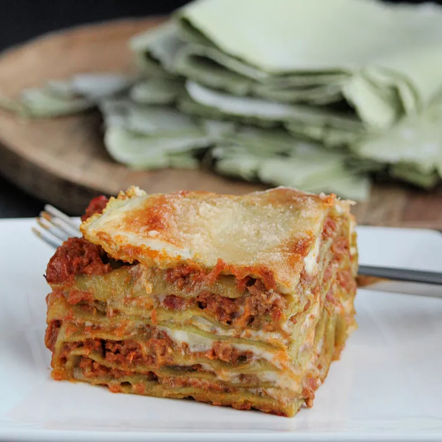

Lasagne

Description
This is an adaptation of the official lasagne from the Bolognese Chamber of Commerce.
The ragu is an authentic sauce, simple without garlic or herbs and spices. Using fresh pasta keeps you from having to pre-boil it.
Ragu:
- 1 (3 ounce) package pancetta, minced
- ½ cup diced carrot
- ½ cup diced celery
- ½ cup diced yellow onion
- 7 ounces ground beef
- Saute pancetta in a large stockpot over medium-high heat until fat has rendered, 1 to 2 minutes. Add carrot, celery, onion, and oil. Cook and stir until vegetables have softened and onion is translucent, about 5 minutes. Add beef and pork. Cook, stirring and mashing meat into small crumbles, until browned, 5 to 7 minutes more.
- Stir wine into the stockpot and bring to a boil. Add tomato sauce and stir; pour in 1 cup broth. Reduce heat to low and partially cover the pot to allow steam to escape. Simmer sauce for 1 hour, stirring occasionally.
- Pour 1 more cup of broth into the sauce. Continue simmering until thick, 1 to 1 1/2 hours. Add more broth only if absolutely necessary; ragu should drop, not run, off a spoon.
- Start preparing pasta after sauce has been cooking for 1 1/2 hours. Bring water and salt to a boil in a small saucepan. Add spinach and cover until it returns to a boil. Stir gently and cook until spinach is heated through. Remove from heat, leave covered, and let cool.